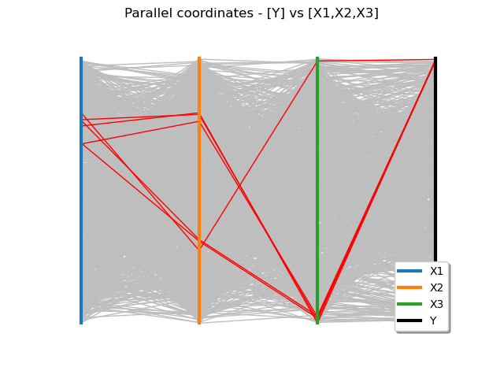
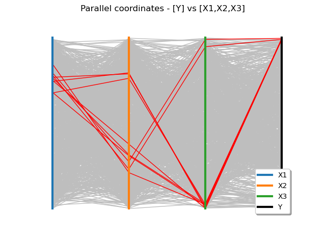
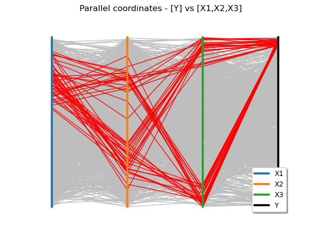
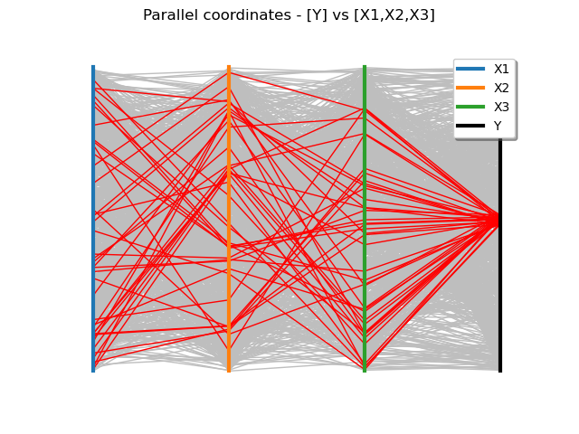

Note
Go to the end to download the full example code
Visualize sensitivity¶
The parallel coordinates graph enables to visualize all the combinations of the input variables which lead to a specific range of the output variable. It is a very simple and cheap tool to visualize sensitivity from the raw data.
Let us consider a model  , where
, where  .
.
The graph requires to have an input sample  and an output sample
and an output sample  .
.
The first figure draws such a graph: each column represents one component
 of the input vector
of the input vector  .
The last column represents the scalar output variable
.
The last column represents the scalar output variable  .
For each point
.
For each point  , each component
, each component  is noted on its respective axe and the last mark is the one which corresponds to
the associated
is noted on its respective axe and the last mark is the one which corresponds to
the associated  . A line joins all the marks. Thus, each point of the sample
corresponds to a particular line on the graph.
. A line joins all the marks. Thus, each point of the sample
corresponds to a particular line on the graph.
The scale of the axes are quantile based: each axe runs between 0 and 1 and each value is represented by its quantile with respect to its marginal empirical distribution.
It is interesting to select, among those lines, the ones which correspond to a specific range of the output variable.
These particular lines are colored differently.
This specific range is defined in the quantile based scale of or in its specific scale.
In that second case, the range is automatically converted into a quantile based scale range.
from openturns.usecases.ishigami_function import IshigamiModel
import openturns as ot
import openturns.viewer as viewer
from matplotlib import pylab as plt
ot.Log.Show(ot.Log.NONE)
We load the Ishigami model from the usecases module :
im = IshigamiModel()
# the Ishigami function
model = im.model
# the input distribution
inputDist = im.distributionX
We create a random vector from out input distribution :
inputVector = ot.RandomVector(inputDist)
And we create the output random vector Y = model(X) :
output = ot.CompositeRandomVector(model, inputVector)
We generate an input sample of size  :
:
N = 1000
X = inputVector.getSample(N)
We evaluate the associated output sample :
Y = model(X)
Y.setDescription("Y")
We display the minimum, maximum and value of the 90% quantile of Y :
print(Y.getMin(), Y.getMax(), Y.computeQuantilePerComponent(0.9))
[-7.95935] [16.8994] [7.80659]
Value based scale to describe the Y range¶
Say we are interested in the higher values of the output . A first
approach is to highlight peculiar lines for which ![Y \in [a,b]]() with
the bounds
with
the bounds  and
and  well chosen. For example, values greater
than 85% of the maximum :
well chosen. For example, values greater
than 85% of the maximum :
;
;
minValue = 0.85 * Y.getMax()[0]
maxValue = Y.getMax()[0]
# We deactivate the default quantile scale.
quantileScale = False
graph = ot.VisualTest.DrawParallelCoordinates(
X, Y, minValue, maxValue, "red", quantileScale
)
graph.setLegendPosition("bottomright")
view = viewer.View(graph)

Here we would like to conclude that the highest values of Y are obtained from a specific input as the highlighted lines clearly follow one only path. However, this approach is too naive and specific to the input sample. Indeed, if we set the lower bound to 80% of the maximum :
minValue = 0.80 * Y.getMax()[0]
maxValue = Y.getMax()[0]
quantileScale = False
graph = ot.VisualTest.DrawParallelCoordinates(
X, Y, minValue, maxValue, "red", quantileScale
)
graph.setLegendPosition("bottomright")
view = viewer.View(graph)

A new path is then available ! That is the reason why we chose a quantile based ranking as the value based parallel plot involves a bit of guessing.
Rank based scale to describe the Y range¶
In this paragraph we use quantile based bounds. We are still interested in the highest values of Y more specifically the 95% quantile :
minValue = 0.95
maxValue = 1.0
# a quantileScale is used, default behaviour
quantileScale = True
graph = ot.VisualTest.DrawParallelCoordinates(
X, Y, minValue, maxValue, "red", quantileScale
)
graph.setLegendPosition("bottomright")
view = viewer.View(graph)

The parallel coordinates plot obtained is helpful : we see peculiar values for each marginal.
Recall that the Ishigami model is given by
![f(X) = \sin(X_1) + 7 \sin^2(X_2) + 0.1 X_3^4 \sin(X_1)]()
with each marginal of  uniform in
uniform in ![]-\pi,\pi[]() .
.
Then the highest values of  are obtained when each term is near its peak :
are obtained when each term is near its peak :
the
 term around
term around  ;
;the
 term around
term around  and
and  ;
;the
 term around and
term around and  .
.
These values can be seen on the parallel plot as for each marginal there is a
cluster around respectively 1, 2 and 2 values for  ,
,  and
and  .
This amounts to 4 different values ‘realizing’ the maximum and we can observe
4 distinct paths on the parallel plot as well.
.
This amounts to 4 different values ‘realizing’ the maximum and we can observe
4 distinct paths on the parallel plot as well.
We can also guess the independence of marginals when looking at paths between
and . For any given cluster value of on the
graph there are as many paths to a high value of as to a small value.
A dependence between these two marginals would have presented unbalanced paths.
When the parallel plot brings nothing¶
To conclude our tour on the parallel plot we look at the 50% quantile : that is values around the mean :
minValue = 0.48
maxValue = 0.52
quantileScale = True
graph = ot.VisualTest.DrawParallelCoordinates(
X, Y, minValue, maxValue, "red", quantileScale
)
graph.setLegendPosition("topright")
view = viewer.View(graph)

We cannot extract any useful information from this parallel plot. In fact it is the expected behaviour as mean values should be attained from various combinations of# the input variables. The parallel coordinates graph is a cheap tool and highly useful to explore more extreme values!
Display figures
plt.show()
Total running time of the script: ( 0 minutes 3.161 seconds)